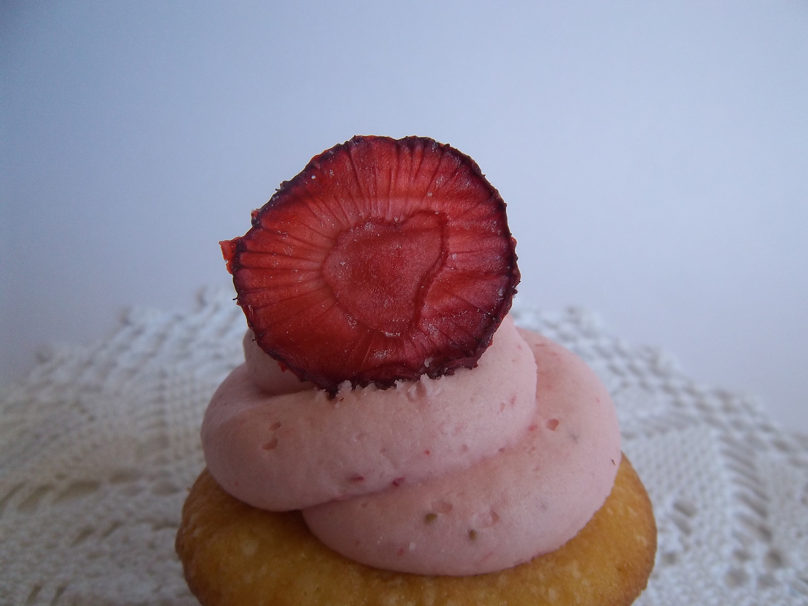
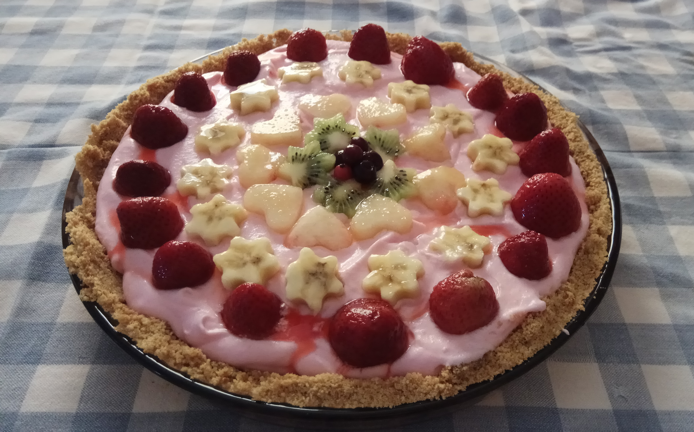

My pastry story begins back in 2011, when I found the urge to bake my own birthday cake, in August.
Gathered all the ingredients needed for the cake and frosting, and managed to make a chocolate birthday cake, rather weird looking.
It was delicious in taste, but the appearance was waaaay off.
But I didn't give up. Next year in August I tried again, and this time it came out better. Still not so good.
After trying to force my birthday cakes to my friends, I finally managed to create some very good sweets.

After my first attempts with birthday cakes, I thought I'd try making cupcakes.
I found cupcake decorating to be super fun and easy, so I gave it a try. And... ye, not so great.
I didn't have the correct items to work with cupcake frosting, and realised after a while that
the more you invest in equipment, the better your cupcakes are going to look.
After practicing with different cone patterns, I finally managed to create some really cute cupcakes.
What I like the most about cupcakes is that the flavours, colours and decorations are limited to someone's imagination.
Whether you enjoy simple vanilla cupcakes with vanilla frosting, or spicy chocolate cupcakes with salted caramel frosting,
you will find everything in this site. Imagination is your only limit.

Lastly, I tried sugarpaste cakes, and I found sugarpaste pretty easy to work with. I created a few cute cakes.
Nowadays, I'm more into other kinds of sweets, like banoffee, but I sometimes still bake birthday cakes for special occasions.
It's very important to remind myself that sugar is not the healthiest ingredient to eat all the time, so I cut down on my pastry activities,
and only bake for others.